Web Server Statistics for e-garkum-sasambo.com
Web Server Statistics for e-garkum-sasambo.com
Program started on Thu, Sep 22 2022 at 8:37 PM.
Analyzed requests from Wed, Aug 31 2022 at 10:42 AM to Thu, Sep 22 2022 at 3:35 PM (22.20 days).
Web Server Statistics for e-garkum-sasambo.comProgram started on Thu, Sep 22 2022 at 8:37 PM.
Analyzed requests from Wed, Aug 31 2022 at 10:42 AM to Thu, Sep 22 2022 at 3:35 PM (22.20 days).
(Go To: Top | General Summary | Monthly Report | Daily Summary | Hourly Summary | Domain Report | Organization Report | Redirected Referrer Report | Referring Site Report | Browser Report | Browser Summary | Operating System Report | Status Code Report | File Size Report | File Type Report | Directory Report | Request Report)
Figures in parentheses refer to the 7-day period ending Sep 22 2022 at 8:37 PM.
Successful requests: 312 (110)
Average successful requests per day: 14 (15)
Successful requests for pages: 84 (25)
Average successful requests for pages per day: 3 (3)
Failed requests: 300 (2)
Redirected requests: 13 (0)
Distinct files requested: 41 (289)
Distinct hosts served: 137 (145)
Data transferred: 10.30 megabytes (3.30 megabytes)
Average data transferred per day: 475.09 kilobytes (482.17 kilobytes)
(Go To: Top | General Summary | Monthly Report | Daily Summary | Hourly Summary | Domain Report | Organization Report | Redirected Referrer Report | Referring Site Report | Browser Report | Browser Summary | Operating System Report | Status Code Report | File Size Report | File Type Report | Directory Report | Request Report)
Each unit ( ) represents 2 requests for pages or part thereof.
) represents 2 requests for pages or part thereof.
| month | #reqs | #pages | |
|---|---|---|---|
| Aug 2022 | 20 | 11 |   |
| Sep 2022 | 292 | 73 |  |
Busiest month: Sep 2022 (73 requests for pages).
(Go To: Top | General Summary | Monthly Report | Daily Summary | Hourly Summary | Domain Report | Organization Report | Redirected Referrer Report | Referring Site Report | Browser Report | Browser Summary | Operating System Report | Status Code Report | File Size Report | File Type Report | Directory Report | Request Report)
Each unit () represents 1 request for a page.
| day | #reqs | #pages | |
|---|---|---|---|
| Sun | 26 | 8 |  |
| Mon | 56 | 11 | |
| Tue | 60 | 10 | |
| Wed | 73 | 23 |  |
| Thu | 50 | 18 | |
| Fri | 13 | 3 | |
| Sat | 34 | 11 | |
(Go To: Top | General Summary | Monthly Report | Daily Summary | Hourly Summary | Domain Report | Organization Report | Redirected Referrer Report | Referring Site Report | Browser Report | Browser Summary | Operating System Report | Status Code Report | File Size Report | File Type Report | Directory Report | Request Report)
Each unit () represents 1 request for a page.
| hour | #reqs | #pages | |
|---|---|---|---|
| 0 | 23 | 8 | |
| 1 | 5 | 4 | |
| 2 | 27 | 6 | |
| 3 | 0 | 0 | |
| 4 | 10 | 1 | |
| 5 | 2 | 0 | |
| 6 | 8 | 1 | |
| 7 | 15 | 9 | |
| 8 | 1 | 0 | |
| 9 | 3 | 2 | |
| 10 | 46 | 14 | |
| 11 | 24 | 5 | |
| 12 | 9 | 4 | |
| 13 | 3 | 2 | |
| 14 | 2 | 1 | |
| 15 | 26 | 6 | |
| 16 | 12 | 2 | |
| 17 | 11 | 4 | |
| 18 | 2 | 1 | |
| 19 | 2 | 1 | |
| 20 | 16 | 3 | |
| 21 | 52 | 6 | |
| 22 | 3 | 1 | |
| 23 | 10 | 3 | |
(Go To: Top | General Summary | Monthly Report | Daily Summary | Hourly Summary | Domain Report | Organization Report | Redirected Referrer Report | Referring Site Report | Browser Report | Browser Summary | Operating System Report | Status Code Report | File Size Report | File Type Report | Directory Report | Request Report)
Listing domains, sorted by the amount of traffic.
| #reqs | %bytes | domain |
|---|---|---|
| 312 | 100% | [unresolved numerical addresses] |
(Go To: Top | General Summary | Monthly Report | Daily Summary | Hourly Summary | Domain Report | Organization Report | Redirected Referrer Report | Referring Site Report | Browser Report | Browser Summary | Operating System Report | Status Code Report | File Size Report | File Type Report | Directory Report | Request Report)
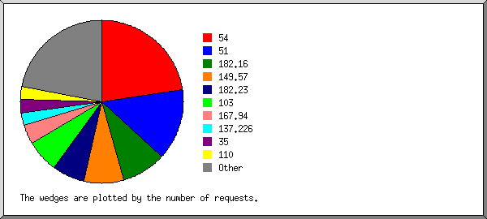
Listing the top 20 organizations by the number of requests, sorted by the number of requests.
| #reqs | %bytes | organization |
|---|---|---|
| 71 | 36.16% | 54 |
| 44 | 16.59% | 51 |
| 27 | 7.54% | 182.16 |
| 25 | 0.73% | 149.57 |
| 20 | 13.51% | 182.23 |
| 20 | 13.52% | 103 |
| 12 | 0.28% | 167.94 |
| 8 | 0.40% | 137.226 |
| 8 | 0.25% | 35 |
| 8 | 6.71% | 110 |
| 7 | 0.15% | 162.142 |
| 6 | 0.23% | 157.55 |
| 6 | 0.42% | 40 |
| 6 | 0.14% | 167.248 |
| 5 | 0.25% | 34 |
| 4 | 0.12% | 193.235 |
| 3 | 0.22% | 183.136 |
| 3 | 0.48% | 159.223 |
| 3 | 0.06% | 207.46 |
| 3 | 0.64% | 179.43 |
| 23 | 1.58% | [not listed: 18 organizations] |
(Go To: Top | General Summary | Monthly Report | Daily Summary | Hourly Summary | Domain Report | Organization Report | Redirected Referrer Report | Referring Site Report | Browser Report | Browser Summary | Operating System Report | Status Code Report | File Size Report | File Type Report | Directory Report | Request Report)
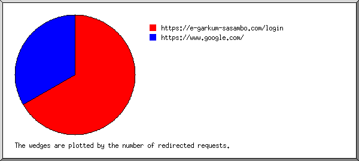
Listing referring URLs, sorted by the number of redirected requests.
| #reqs | URL |
|---|---|
| 2 | https://e-garkum-sasambo.com/login |
| 1 | https://www.google.com/ |
(Go To: Top | General Summary | Monthly Report | Daily Summary | Hourly Summary | Domain Report | Organization Report | Redirected Referrer Report | Referring Site Report | Browser Report | Browser Summary | Operating System Report | Status Code Report | File Size Report | File Type Report | Directory Report | Request Report)
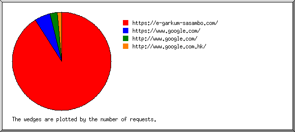
Listing referring sites, sorted by the number of requests.
| #reqs | site |
|---|---|
| 71 | https://e-garkum-sasambo.com/ |
| 4 | https://www.google.com/ |
| 2 | http://www.google.com/ |
| 1 | http://www.google.com.hk/ |
(Go To: Top | General Summary | Monthly Report | Daily Summary | Hourly Summary | Domain Report | Organization Report | Redirected Referrer Report | Referring Site Report | Browser Report | Browser Summary | Operating System Report | Status Code Report | File Size Report | File Type Report | Directory Report | Request Report)
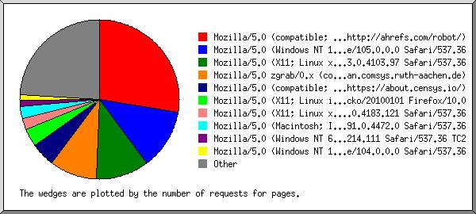
Listing browsers with at least 1 request for a page, sorted by the number of requests for pages.
| #reqs | #pages | browser |
|---|---|---|
| 110 | 23 | Mozilla/5.0 (compatible; AhrefsBot/7.0; +http://ahrefs.com/robot/) |
| 61 | 10 | Mozilla/5.0 (Windows NT 10.0; Win64; x64) AppleWebKit/537.36 (KHTML, like Gecko) Chrome/105.0.0.0 Safari/537.36 |
| 13 | 9 | Mozilla/5.0 (X11; Linux x86_64) AppleWebKit/537.36 (KHTML, like Gecko) Chrome/83.0.4103.97 Safari/537.36 |
| 8 | 8 | Mozilla/5.0 zgrab/0.x (compatible; Researchscan/http; +http://researchscan.comsys.rwth-aachen.de) |
| 9 | 4 | Mozilla/5.0 (compatible; CensysInspect/1.1; +https://about.censys.io/) |
| 3 | 3 | Mozilla/5.0 (X11; Linux i686; rv:10.0) Gecko/20100101 Firefox/10.0 |
| 2 | 2 | Mozilla/5.0 (X11; Linux x86_64) AppleWebKit/537.36 (KHTML, like Gecko) Chrome/85.0.4183.121 Safari/537.36 |
| 2 | 2 | Mozilla/5.0 (Macintosh; Intel Mac OS X 10_15_7) AppleWebKit/537.36 (KHTML, like Gecko) Chrome/91.0.4472.0 Safari/537.36 |
| 1 | 1 | Mozilla/5.0 (Windows NT 6.1; WOW64) AppleWebKit/537.36 (KHTML, like Gecko) Chrome/40.0.2214.111 Safari/537.36 TC2 |
| 10 | 1 | Mozilla/5.0 (Windows NT 10.0; Win64; x64) AppleWebKit/537.36 (KHTML, like Gecko) Chrome/104.0.0.0 Safari/537.36 |
| 1 | 1 | Mozilla/5.0 (Macintosh; Intel Mac OS X 10_15_6) AppleWebKit/537.36 (KHTML, like Gecko) Chrome/86.0.4216.0 Safari/537.36 Edg/86.0.598.0 |
| 1 | 1 | Mozilla/5.0 (Linux; Android 6.0; Nexus 5 Build/MRA58N) AppleWebKit/537.36 (KHTML, like Gecko) Chrome/81.0.4044.138 Mobile Safari/537.36 |
| 1 | 1 | Expanse, a Palo Alto Networks company, searches across the global IPv4 space multiple times per day to identify customers' presences on the Internet. If you would like to be excluded from our scans, please send IP addresses/domains to: scaninfo@paloaltonetworks.com |
| 1 | 1 | Mozilla/5.0 (Linux; U; Android 2.2; ja-jp; SC-02B Build/FROYO) AppleWebKit/533.1 (KHTML, like Gecko) Version/4.0 Mobile Safari/533.1 |
| 1 | 1 | Mozilla/5.0 (Windows NT 10.0; Win64; x64) AppleWebKit/537.36 (KHTML, like Gecko) Chrome/64.0.3282.140 Safari/537.36 Edge/17.17134 |
| 1 | 1 | Mozilla/5.0 (Windows NT 6.1; Win64; x64; rv:59.0) Gecko/20100101 Firefox/59.0 |
| 25 | 1 | panscient.com |
| 1 | 1 | Mozilla/5.0 (Macintosh; Intel Mac OS X 10_15_4) AppleWebKit/537.36 (KHTML, like Gecko) Chrome/81.0.4044.92 Safari/537.36 |
| 1 | 1 | Mozilla/5.0 (compatible; NetcraftSurveyAgent/1.0; +info@netcraft.com) |
| 1 | 1 | Mozilla/5.0 (X11; Linux x86_64; en-US; rv:2.0b2pre) Gecko/20100712 Minefield/4.0b2pre |
| 1 | 1 | Mozilla/5.0 (Windows NT 10.0; Win64; x64; rv:83.0) Gecko/20100101 Firefox/83.0 |
| 1 | 1 | Mozilla/5.0 (X11; OpenBSD i386) AppleWebKit/537.36 (KHTML, like Gecko) Chrome/36.0.1985.125 Safari/537.36 |
| 17 | 1 | Go-http-client/1.1 |
| 15 | 1 | Mozilla/5.0 (compatible; bingbot/2.0; +http://www.bing.com/bingbot.htm) |
| 1 | 1 | Mozilla/5.0 (Linux; Android 6.0; HTC One M9 Build/MRA517698) AppleWebKit/537.36 (KHTML, like Gecko) Chrome/52.0.1744.98 Mobile Safari/537.3 |
| 1 | 1 | Mozilla/5.0 (Windows NT 6.1; WOW64) AppleWebKit/537.36 (KHTML, like Gecko) Chrome/42.0.2311.90 Safari/537.36 |
| 1 | 1 | Mozilla/5.0 (Macintosh; Intel Mac OS X 10.11; rv:47.0) Gecko/20100101 Firefox/47.0 |
| 10 | 1 | Mozilla/5.0 (Windows NT 10.0; Win64; x64) AppleWebKit/537.36 (KHTML, like Gecko) Chrome/88.0.4324.150 Safari/537.36 |
| 1 | 1 | Mozilla/5.0 (iPad; CPU OS 8_4_1 like Mac OS X) AppleWebKit/600.1.4 (KHTML, like Gecko) CriOS/45.0.2454.68 Mobile/12H321 Safari/600.1.4 |
| 1 | 1 | Mozilla/5.0 (X11; Linux x86_64) AppleWebKit/537.36 (KHTML, like Gecko) Chrome/96.0.4664.110 Safari/537.36 |
| 9 | 0 | [not listed: 5 browsers] |
(Go To: Top | General Summary | Monthly Report | Daily Summary | Hourly Summary | Domain Report | Organization Report | Redirected Referrer Report | Referring Site Report | Browser Report | Browser Summary | Operating System Report | Status Code Report | File Size Report | File Type Report | Directory Report | Request Report)
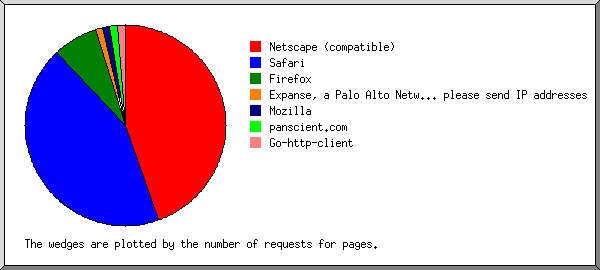
Listing browsers with at least 1 request for a page, sorted by the number of requests for pages.
| # | #reqs | #pages | browser |
|---|---|---|---|
| 1 | 143 | 37 | Netscape (compatible) |
| 2 | 118 | 36 | Safari |
| 116 | 34 | Safari/537 | |
| 1 | 1 | Safari/600 | |
| 1 | 1 | Safari/533 | |
| 3 | 6 | 6 | Firefox |
| 3 | 3 | Firefox/10 | |
| 1 | 1 | Firefox/59 | |
| 1 | 1 | Firefox/47 | |
| 1 | 1 | Firefox/83 | |
| 4 | 1 | 1 | Expanse, a Palo Alto Networks company, searches across the global IPv4 space multiple times per day to identify customers' presences on the Internet. If you would like to be excluded from our scans, please send IP addresses |
| 1 | 1 | Expanse, a Palo Alto Networks company, searches across the global IPv4 space multiple times per day to identify customers' presences on the Internet. If you would like to be excluded from our scans, please send IP addresses/domains | |
| 5 | 1 | 1 | Mozilla |
| 1 | 1 | Mozilla/2 | |
| 6 | 25 | 1 | panscient.com |
| 7 | 17 | 1 | Go-http-client |
| 17 | 1 | Go-http-client/1 |
(Go To: Top | General Summary | Monthly Report | Daily Summary | Hourly Summary | Domain Report | Organization Report | Redirected Referrer Report | Referring Site Report | Browser Report | Browser Summary | Operating System Report | Status Code Report | File Size Report | File Type Report | Directory Report | Request Report)
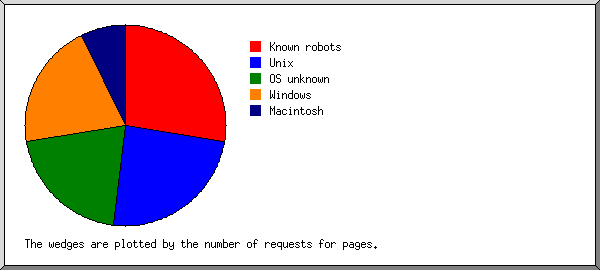
Listing operating systems, sorted by the number of requests for pages.
| # | #reqs | #pages | OS |
|---|---|---|---|
| 1 | 110 | 23 | Known robots |
| 2 | 26 | 20 | Unix |
| 25 | 19 | Linux | |
| 1 | 1 | BSD | |
| 3 | 76 | 17 | OS unknown |
| 4 | 93 | 17 | Windows |
| 88 | 14 | Windows NT | |
| 5 | 3 | Unknown Windows | |
| 5 | 6 | 6 | Macintosh |
(Go To: Top | General Summary | Monthly Report | Daily Summary | Hourly Summary | Domain Report | Organization Report | Redirected Referrer Report | Referring Site Report | Browser Report | Browser Summary | Operating System Report | Status Code Report | File Size Report | File Type Report | Directory Report | Request Report)
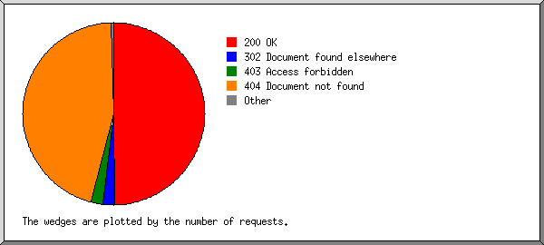
Listing status codes, sorted numerically.
| #reqs | status code |
|---|---|
| 311 | 200 OK |
| 13 | 302 Document found elsewhere |
| 1 | 304 Not modified since last retrieval |
| 13 | 403 Access forbidden |
| 286 | 404 Document not found |
| 1 | 405 Method not allowed |
(Go To: Top | General Summary | Monthly Report | Daily Summary | Hourly Summary | Domain Report | Organization Report | Redirected Referrer Report | Referring Site Report | Browser Report | Browser Summary | Operating System Report | Status Code Report | File Size Report | File Type Report | Directory Report | Request Report)
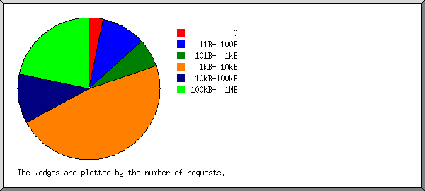
| size | #reqs | %bytes |
|---|---|---|
| 0 | 10 | |
| 1B- 10B | 0 | |
| 11B- 100B | 32 | 0.01% |
| 101B- 1kB | 20 | 0.06% |
| 1kB- 10kB | 147 | 5.78% |
| 10kB-100kB | 35 | 14.53% |
| 100kB- 1MB | 68 | 79.62% |
(Go To: Top | General Summary | Monthly Report | Daily Summary | Hourly Summary | Domain Report | Organization Report | Redirected Referrer Report | Referring Site Report | Browser Report | Browser Summary | Operating System Report | Status Code Report | File Size Report | File Type Report | Directory Report | Request Report)
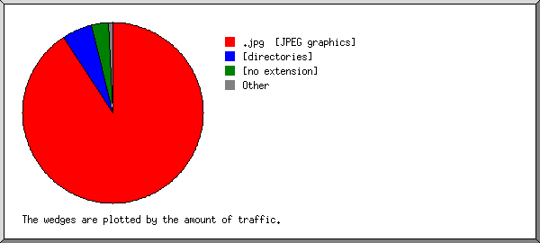
Listing extensions with at least 0.1% of the traffic, sorted by the amount of traffic.
| #reqs | %bytes | extension |
|---|---|---|
| 83 | 90.79% | .jpg [JPEG graphics] |
| 84 | 5.51% | [directories] |
| 54 | 3.02% | [no extension] |
| 29 | 0.57% | .png [PNG graphics] |
| 62 | 0.12% | [not listed: 4 extensions] |
(Go To: Top | General Summary | Monthly Report | Daily Summary | Hourly Summary | Domain Report | Organization Report | Redirected Referrer Report | Referring Site Report | Browser Report | Browser Summary | Operating System Report | Status Code Report | File Size Report | File Type Report | Directory Report | Request Report)
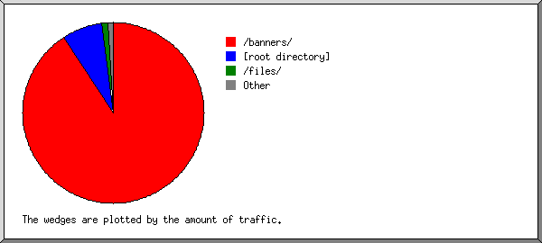
Listing directories with at least 0.01% of the traffic, sorted by the amount of traffic.
| #reqs | %bytes | directory |
|---|---|---|
| 83 | 90.79% | /banners/ |
| 194 | 7.27% | [root directory] |
| 12 | 1.05% | /files/ |
| 18 | 0.63% | /villages/ |
| 5 | 0.26% | /questionaire/ |
(Go To: Top | General Summary | Monthly Report | Daily Summary | Hourly Summary | Domain Report | Organization Report | Redirected Referrer Report | Referring Site Report | Browser Report | Browser Summary | Operating System Report | Status Code Report | File Size Report | File Type Report | Directory Report | Request Report)
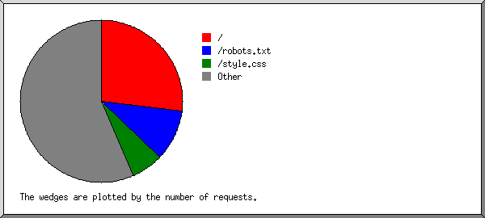
Listing files with at least 20 requests, sorted by the number of requests.
| #reqs | %bytes | last time | file |
|---|---|---|---|
| 84 | 5.51% | Sep/22/22 11:40 AM | / |
| 32 | 0.01% | Sep/22/22 10:59 AM | /robots.txt |
| 20 | 0.06% | Sep/22/22 11:00 AM | /style.css |
| 176 | 94.43% | Sep/21/22 2:05 AM | [not listed: 31 files] |